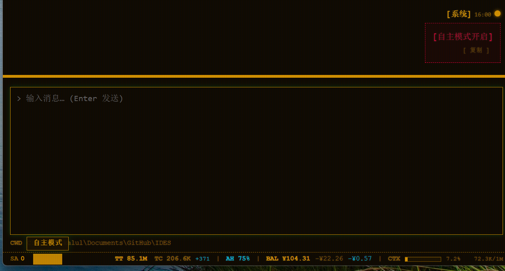

Perception & Communication
Thesis
IDES isn't "you call it and it moves" — it's "it hears you on its own, and comes to you."
Everything so far has been about you using IDES proactively — the move-in-ready home, built-in tools, even the afterimages, are all things you initiate. But IDES has one more advanced capability: Perception & Communication.
This chapter covers how IDES "hears" the outside world and responds to you proactively — without you having to call on it with every single message.
This chapter covers
- Autonomous perception mode: The switch that turns your agent from "passively waiting for you to call" into "actively sensing the outside world."
- Mail system: IDES's built-in agent mailbox for receiving, reading, and sending real emails.
- Message platform adapters: Connect your agent to instant messaging apps like WeChat and Telegram, so it can talk to you even when you're out and about.
Autonomous Perception Mode
After using IDES for a while, you might have noticed it's more like an assistant that waits for you to speak before it acts. "Autonomous perception mode" lets you choose a more advanced usage — letting it hear what's going on out there on its own and come to you.
Before you turn it on: the agent is "passive"
When it's off, the agent only answers when you ask. If you want it to check email, you have to send it a message to do so. If you want it to check WeChat, you have to tell it to.
Once it's on: the agent "actively" senses
With autonomous perception mode on, the agent is like having a pair of ears — it goes and checks on its own whether there's anything new out there:
- Whether new email has arrived in its mailbox
- Whether new messages have come in from platforms like WeChat or Telegram
If there is, it wakes up on its own and handles it for you. You don't have to call on it for everything.
This switch is off by default
- Off by default: IDES won't make decisions for you — by default it doesn't poll the outside world. If you want to use it, you have to turn it on yourself.
- Re-open it on every startup: It doesn't remember your last switch state — this ensures external messages can't sneak into the agent's inbox unless you deliberately open that door.
How to turn it on
Turn this switch on in the IDES interface and the agent enters "autonomous mode." Once on, the top of the interface displays [Autonomous mode on] —

Seeing this indicator means the agent has already "heard" the outside world and will proactively watch email and messaging platforms for new activity.
In short
Autonomous perception mode is about giving the agent a pair of ears. With it on, the mail and messaging platforms described below truly come alive. Without it, they just sit there, waiting for you to speak before they move.
Mail System
IDES ships with an integrated mail system — the agent has its own real mailbox and can receive, read, and send real emails. IDES acts as an agent mail client.
See Built-in tools · mail for how to call it.
What it is
A regular person's mailbox is their own. This mailbox in IDES is for the agent — it has its own independent mail account and can genuinely send and receive email, not just simulate an inbox.
Here's what you can do with it:
| What you can do | Description |
|---|---|
| Receive | The agent can see what new mail is in its mailbox |
| Read | Open to view the full content |
| Send | Send out using the agent's identity |
| Manage | Delete, mark as read, etc. |
Pair it with autonomous perception mode
The mail system is most useful when paired with autonomous perception mode:
- Without autonomous perception: The agent's mailbox "sits there" — it only checks when you tell it to.
- With autonomous perception: The agent proactively checks its mailbox, and when a new email arrives it wakes up on its own to handle it.
# Have the agent check its mailbox, the latest 10
mail(action="inbox", limit=10)
How you'll use it
Once your agent's mailbox is set up, you can communicate with the agent over email. For example:
You're on a business trip. You email the agent at home: "Help me put together the weekly report and send it to me." When it receives your message, it wakes up on its own, opens your email, handles it, and replies to you over email.
This is also why it's called "Perception & Communication" — email is one path through which the agent perceives the outside world and proactively responds to you.
A security note
You can configure your personal mailbox and have the agent help organize it. But use autonomous perception mode with caution — there's no guarantee that instructions embedded in malicious emails won't steer the agent into doing something wrong. In the future, IDES will consider adding a switch so that only whitelisted mailbox accounts can be perceived autonomously.
Message Platform Adapters
Email "communication" means sending email. Message platform adapters, on the other hand, let you talk to the agent through instant messaging apps (WeChat, Telegram, Yuanbao... ) — so even when you're away, you can reach it anytime.
See Equipment · channel for the core mechanism behind channels.
WeChat ClawBot
WeChat ClawBot connects you to personal WeChat — after you scan a QR code with your personal WeChat, the agent can talk to you there. However you normally use WeChat, you can chat with your agent the same way.
It's a standard adapter (plug-and-play), open-sourced on GitHub: https://github.com/kaluluosi/ides_adapter_weixin
Connecting WeChat takes three steps total, and you don't need to configure MCP yourself — just send a message to the agent and it'll handle it.
Step 1: Send the config to the agent
Send your agent the config below (or the GitHub link above), and it'll register this adapter MCP on its own:
name = "weixin"
transport = "stdio"
command = "uvx"
args = ["ides-adapter-weixin"]
enabled = true
exclude = []
[env]
WEIXIN_ACCOUNT_ID = "default"
You don't have to touch any config file — the agent will set it up for you automatically.
Connecting multiple WeChat accounts
WEIXIN_ACCOUNT_ID gives each WeChat account a name. The default is default; if you want to connect multiple WeChat accounts, change this value — one account per entry.
Step 2: The agent will ask you to bind via QR code
Once registered, the agent will ask you to scan a QR code to bind your personal WeChat:
The agent initiates the connection
→ A QR code appears on screen
→ You scan it with your personal WeChat
→ Confirm the login
→ Your WeChat is now bound to the agent
Step 3: Have the agent send WeChat a message
Once bound, turn on autonomous perception mode and have the agent send a message to WeChat ClawBot — then it can talk to you over WeChat.
What it can do
Once connected, it can receive and reply to messages you send in WeChat. It's like having an "AI friend" in WeChat that you can turn to anytime to get things done.
ClawBot connects to personal WeChat
ClawBot connects to personal WeChat (login by scanning a QR code). WeCom is a different story — its group bot can only send; for two-way communication you'd need "WeCom (Application)". Don't mix them up.
Custom Platform Adapters
After seeing "connect to personal WeChat," you might wonder: what if I want to connect the agent to another platform (Telegram, Yuanbao, or even my own app)?
The answer is simple — IDES doesn't build a separate integration for every platform. It uses one unified connection method (channel); you just write a connector for the new platform by following the pattern and it's in.
Start by looking at this reference project
If you want to connect the agent to any platform, the best starting point is the ides_adapter_weixin project — it is the reference example (template) for platform adapters:
https://github.com/kaluluosi/ides_adapter_weixin
This WeChat adapter looks like it's for "one specific platform," but it actually demonstrates a general-purpose connection method — follow its pattern and you can connect any other platform.
Follow it to connect your platform
- IDES doesn't build one integration for WeChat and another for Telegram
- Any platform can be connected using the same connection method
ides_adapter_weixinis a ready-made template for this approach — see how it connects and you'll know how to connect other platforms
The core idea in one sentence: one platform = write a connector, and it's connected into IDES. WeChat was built following this template, and so can any other platform.